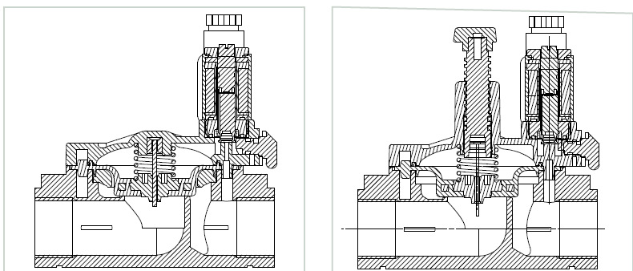
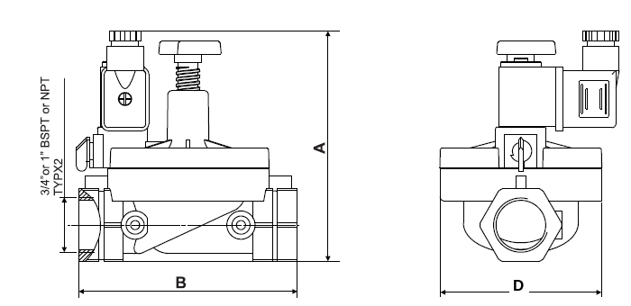
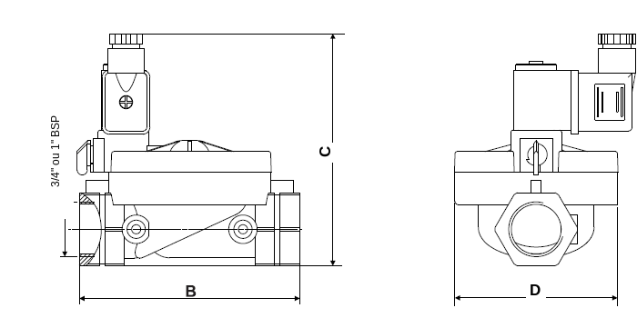
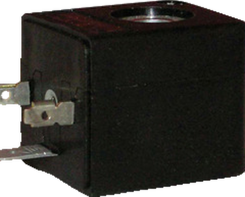
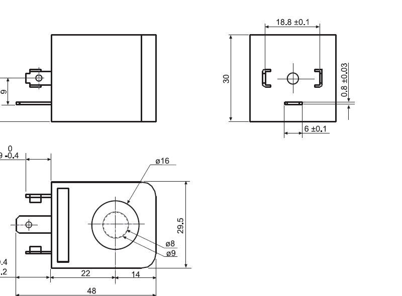

A G80 é uma válvula solenoide de 2 vias, pilotada, para comando liga/desliga de água e líquidos limpos em tubulações de 3/4" a 2". O piloto usa a pressão da própria linha para mover o diafragma: uma bobina de baixa potência comanda vazões altas, com pouca perda de carga.
Corpo e tampa são de nylon reforçado, que não sofre corrosão em contato com água. Isso deixa a válvula leve e de manutenção simples. Ela é fornecida nas versões normalmente fechada (NF) e normalmente aberta (NA).

| Característica | Especificação |
|---|---|
| Diâmetros | 3/4", 1", 1-1/2", 2" e 3" |
| Conexão | Rosca fêmea BSP |
| Função | 2 vias, normalmente fechada (NF) ou normalmente aberta (NA) |
| Faixa de pressão | 0,3 a 10 kgf/cm² (3/4" e 1") 0,3 a 10 bar (1-1/2" e 2") |
| Temperatura máxima do fluido | 50 °C |
| Solenoide | 2 vias NF ou NA, todas as tensões Versão 1" PVC: bobina AC, DC ou latch (biestável) |
| Peça | Material |
|---|---|
| Corpo e tampa | Nylon reforçado · PVC na versão 1" slip-in |
| Mola | Aço inox AISI 302 |
| Diafragma | Borracha nitrílica |
| Vedações | NBR (Buna-N) ou EPDM |
| Parafusos | Aço inox AISI 304 |
| Operador do solenoide | Latão e aço inox |
| Diâmetro | Orifício (mm) | Kv (L/min) | Kv (m³/h) |
|---|---|---|---|
| 3/4" | 27 | 140 | 8,4 |
| 1" | 27 | 200 | 12,0 |
| 1-1/2" | 55 | 520 | 31,2 |
| 2" | 55 | 600 | 36,0 |
Kv é a vazão de água que passa pela válvula totalmente aberta com perda de carga de 1 bar.
Perda de carga com a válvula totalmente aberta. A área azul marca a zona de trabalho recomendada.


| Diâmetro | A | B | C | D | Peso |
|---|---|---|---|---|---|
| 3/4" | 105 | 110 | 105 | 81 | 230 g |
| 1" | 112 | 110 | 112 | 81 | 230 g |
| 1-1/2" | 180 | 160 | 126 | 127 | 740 g |
| 2" | 190 | 170 | 126 | 127 | 790 g |
A: altura com controle de vazão · B: comprimento · C: altura sem controle de vazão · D: largura. Medidas em mm.
VALIDAR: o catálogo anterior trazia A = 108 mm (3/4") e 114 mm (1"), e largura de 126 mm para 1-1/2" e 2". Esta tabela segue a ficha do fornecedor.
O código de pedido é montado com os campos abaixo, nesta ordem:
G80-S – porta · função · vedação · controle de vazão – tensão · potência · conector
| Campo | Opções (código) |
|---|---|
| Porta | 3/4" BSPT (50) · 3/4" NPT (51) · 1" BSPT (60) · 1" NPT (61) · 1-1/2" BSP (70) · 1-1/2" NPT (71) · 2" BSP (80) · 2" NPT (81) |
| Função | 2 vias NF (1) · 2 vias NA (2) |
| Vedação | PVC (P) |
| Controle de vazão | Com (5) · Sem (6) |
| Tensão | 6 V (1) · 12 V (2) · 24 V (3) · 110 V (5) · 230 V (7) |
| Potência | AC 7,5 W 50 Hz (1) · AC 6 W 60 Hz (2) · DC 6,5 W (3) · AC 4 W 50 Hz (4) · AC 3 W 60 Hz (5) · DC 3 W (7) · Latch (L) |
| Conector | Sem (0) · Com (1) · Com LED bicolor (2) · Com LED e proteção contra surto (3) · Outro (9) |
Informe o tipo de corrente (AC ou DC) e a pressão de trabalho. Para indicarmos a bobina mais adequada, envie também:
Bobina de corpo largo para os operadores G80, feita para ambiente industrial e construída conforme a norma EN 60204-1.

| Característica | Especificação |
|---|---|
| Tensões padrão | 24, 110 e 230 V AC (50 ou 60 Hz) · 6, 12 e 24 V DC |
| Variação de tensão | ±10% da nominal (categoria de sobretensão II) |
| Ciclo de trabalho | 100% |
| Temperatura ambiente | -20 a 70 °C |
| Classe de isolamento | F (155 °C) |
| Grau de proteção | IP65 com conector (pó e respingos) |
| Terminais | AMP 6,3 × 0,8 mm (DIN 4624.2), 2 polos + terra |
| Conector | DIN 46242, fixação por parafusos M3, 2 posições a 180° |
| Montagem | Sobre a válvula, 4 posições a 90° |
| Fixação | No operador G80, com porca M8 × 0,75 |
| Alta potência | Baixa potência | |||||
|---|---|---|---|---|---|---|
| 50 Hz | 60 Hz | DC | 50 Hz | 60 Hz | DC | |
| Partida (VA) | 9 | 7,5 | – | 5,5 | 4,5 | – |
| Retenção (VA) | 5 | 4,2 | – | 3 | 2,5 | – |
| Potência nominal DC (W) | – | – | 4,5 | – | – | 2,5 |

G80-BW – tensão · potência · conector
| Campo | Opções (código) |
|---|---|
| Tensão | 6 V (1) · 12 V (2) · 24 V (3) · 110 V (5) · 230 V (7) |
| Potência | AC 5 W 50 Hz (1) · AC 4 W 60 Hz (2) · DC 4,5 W (3) · AC 3 W 50 Hz (4) · AC 2 W 60 Hz (5) · DC 2,5 W (7) |
| Conector | Sem (0) · Com (1) · Com LED bicolor (2) · Com LED e proteção contra surto (3) · Outro (9) |
| Exemplo | G80-BW-331: bobina 24 V DC 4,5 W, com conector. |